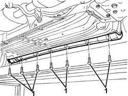
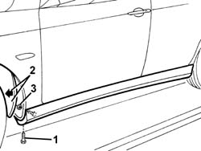
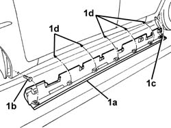
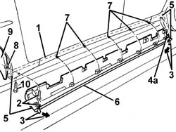
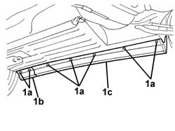
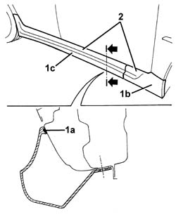
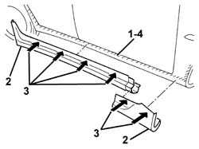
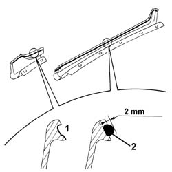
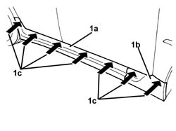
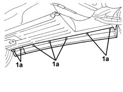

7055A38 l/h or r/h rail moulding (door sill) - r+r
- Path
- Procedures > 70 FITTINGS > 7055 MOULDING AND PROTECTION > 7055A exterior mouldings > 7055A38 l/h or r/h rail moulding (door sill) - r+r
- Kind
- repair procedure (removal / refitting; the operation number is the code)
- Applies to
- all engines; all production periods
- Interactive page
- https://sloeber94.github.io/elrnDB-a156/en/#/3238949
Applies to: all engines; all production periods
 Removing
Removing
 Refitting
RefittingPosition the vehicle on a four column type lift.
Raise the vehicle.
1. Undo the lower bolts fixing the trim.

Applies to: all engines; all production periods
1. Undo the lower bolt fixing the additional front wheel arch liner.
2. Remove the additional wheel arch liner at the bottom.
3. Undo the front nut fixing the trim.

Applies to: all engines; all production periods
1. Remove the trim, releasing the adhesive tape (1a), the bolt (1b), the centering pin (1c) and the retainers (1d).

Applies to: all engines; all production periods
Refitting
RemovingCheck that the moulding is undamaged.
1. Degrease the area of the bodywork where the adhesive tape is stuck using heptane.
2. Place the head of the bolt in position.
3. Detach a section of protective film at the two ends of the adhesive tape.
4. Position the trim and fit the bolt (2) and the centering pin (4a) in the bodyshell.
5. Centre the trim with the bodywork profile.
6. Remove the protective film from the adhesive tape by pulling the two ends (3).
7. Engage the retainers.
8. Tighten the nut.
9. Place the additional wheel arch liner back in position.
10. Tighten the bolt.

Applies to: all engines; all production periods
1. Tighten the lower bolts fixing the trim.
Applies to: all engines; all production periods
Lower the vehicle and remove it from the lift.
Applies to: all engines; all production periods; only with equipment: GTA
Removing
RefittingPosition the vehicle on a four column type lift.
Raise the vehicle.
1. Undo the lower bolts (1a) fixing the front trim (1b) and the rear trim (1c).

Applies to: all engines; all production periods; only with equipment: GTA
Lower the vehicle.
1. Using cutters, cut the bead of sealant (1a) along the upper perimeter of the front trim (1b) and the rear trim (1c), taking care not to nick the vehicle paintwork.
2. Keep the trims (1b) and (1c).

Applies to: all engines; all production periods; only with equipment: GTA
Refitting
RemovingCheck that the two parts of the trim are not damaged.
1. Clean the surface of the vehicle where the trims are attached using adhesive, removing any residues of adhesive; then degrease the surface using heptane.
2. Test fit the trims.
3. Have suitable equipment ready to keep the trims pressed against the vehicle after the sticking process described below.
4. Treat the surface of the vehicle involved in the sticking of the trims with 'BP' type primer (Cap. 9.55738/06).

Applies to: all engines; all production periods; only with equipment: GTA
1. Treat the surfaces of the trims involved in the sticking with 'BP' type primer (Cap. 9.55738/06).
2. Within a maximum of 10 minutes proceed with the application of the sealant Fa. Gurit - Essex Betalink k2 80g (Cap. 9.55738/06 type A), using a compressed air gun.

Applies to: all engines; all production periods; only with equipment: GTA
1. First place the rear trim (1a) in position, then the front trim (1b) and press them using the special equipment (1c).

Applies to: all engines; all production periods; only with equipment: GTA
1. Tighten the lower trim fixing bolts.
 | Fastening | Component | Ø | Value (daNm) |
|---|---|---|---|---|
- | Bolt | UNDERDOOR SIDE MEMBER MOULDING | M6 | 0.12 |

Applies to: all engines; all production periods; only with equipment: GTA
Remove the equipment one hour after the sticking process.
If necessary, clean any residues of adhesive from the trim and the bodywork.
Remove the vehicle from the lift.